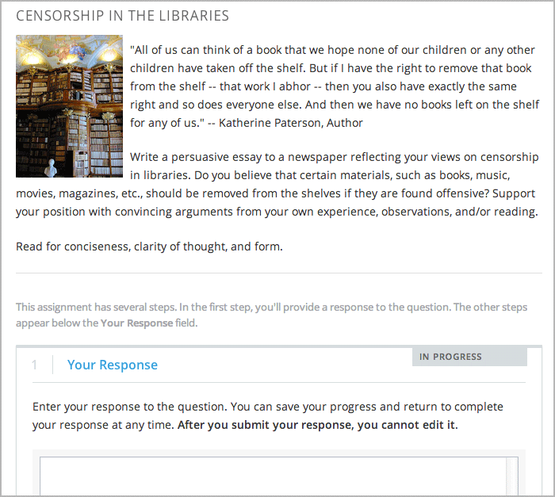

6.25.2. 创建一个开放题回答评估
创建一个开放题回答评估有如下步骤:
这些步骤的详细介绍如下.
想要了解更多关于开放题回答评估组件的信息，请查看
开放题回答评估 2. 要了解更多关于浏览标准和学生关于回答开放题回答评估的信息，请查看, see 访问ORA评估信息.
6.25.2.1. 步骤 1. 创建组件
要创建一个你的开放题回答评估组价,有如下步骤。
- 在Studio中, 打开你要创建开放题回答评估的单元.
- 在 添加新组件下方, 点击 问题, 点击 高级 标签, 然后点击 同伴评估.
- 在这个问题组件出现的地方, 点击 编辑.
6.25.2.2. 步骤 2. 添加提示
要添加提示或者问题，有以下的步骤:
- 在开放题回答评估编辑器中选择**提示**标签.
- 添加你的问题文本到文本区域。用你的文本替代默认的文本。
- 选择 添加一个提示 带另一个提示中.
6.25.2.2.1. 添加格式或者提现到一个提示中
现在，你不能添加文本格式或者图像到同伴评估组件中。要设置格式或者图像到提示文本中，你可以添加一个HTML组件包含你的文本到你的开放题回答评估中, 保持**提示标签** 空白. 这个同伴评估的说明依然会出现在**你的回答**区域.

6.25.2.3. 步骤 3. 添加标准
在这步，你可以添加你的标准并且提供给你的学生反馈选项。你也可以给每个问题都添加标准，不管问题中提示的个数。
对于下面的每步，用你自己的文本代替默认的文本.
Note
所有的开放题评估包含都一个反馈区域在标准下方以便学生可以提供同伴全部回答反馈。你也可以允许或者要求学生提供对于个性标准的回馈。更多相关信息,请查看:ref:Feedback Options.
要添加一个标准，有以下的步骤.
- 在开放题回答评估中，店家**标准** 标签.
- 在第一个 标准 章节, 输入你的第一个标准的名字.
- 在第一个 选项 章节, 输入第一个选项的名字, 解释, 和分值.
- 在下一个**选项** 章节,输入下一个选项的名字, 解释, 和分值.
- 对于每个选项重复第四步. 如果你要添加更多选项, 点击 添加选项.
- 在 **这个标准的反馈**旁边, 在下拉菜单中选择一个值.
- 如果你不想要你的学生提供反馈，选择 None.
- 如果你要求学生必须提供反馈, 选择 Required.
- 如果你要求学生可选择提供反馈, 选择 Optional.
6.25.2.4. 步骤 4. 指定名称和日期评估的名称和日期
要指定一个评估的名称和学生回答的开始与结束的日期，有以下的步骤：
- 在组件编辑器中, 点击**设置** 标签.
- 在 **展示名称**旁边, 键入你想要给这个评估的名字.
- 选择 回答开始日期 和 回答开始时间, 输入你想要学生开始提交回答的日期. 注意所有的时间都是世界时间(UTC).
- 选择 回答结束日期 和 回答结束时间, 输入你想要学生结束提交回答的日期. 注意所有的时间都是世界时间(UTC).
Note
我们建议你设置结束日期最少在开始日期两天后. 如果回答结束日期和同伴评估同时关闭，学生提交的回答仅仅在关闭之前，其他的学生可能没时间进行同伴评估在同伴评估之前。
6.25.2.5. 步骤 5. 挑选评估步骤
开放题回答评估可以包含学生练习，同伴评估和自我评估。你可以设置包含一个同伴评估步在自我评估之前，反之亦然。
如果你设置了包含一个学生练习步骤, 你也 必须 包含一个同伴评估步骤。你也可以包含自我评估步骤。学生练习步骤必须在同伴评估和自我评估步骤之前。
要添加步骤到评估:
- 在组件编辑器中，点击**设置** 标签.
- 向下滚动到 允许图片回答 区域.
- 找到下面的标题:
- 步骤: 学生练习
- 步骤: 同伴评估
- 步骤: 自我评估
在复选框中选择你想要这个评估包含的步骤.
6.25.2.6. 步骤 6. 指定步骤设置
在你选择你想要的步骤之后，你可以指定这些设置.
6.25.2.6.1. 学生练习
对于学生练习步骤, 你可以输入一个或者多个你创建的回答, 然后对于每个你制定的标准选择一个选项.
Note
你必须输入你的完整的标准在**标准** 标签上在你选择为学生选择练习回答之前.如果你之后改变一个你的标准，你必须同时升级学生练习步骤.
要添加给学生练习评估评分步骤:
- 在 步骤: 学生练习**下面, 选择第一个 **回答评分 节.
- 在**回答** 区域里面, 输入你的示例文本.
- 在**回答评分**下方, 选择你想要的给每个标准添加的选项.
更多相关信息, 请查看 学生练习.
6.25.2.6.2. 同伴评估
对于同伴评估步骤, 你要指定每个学生必须给回答评分的个数,这个学生必须给回答评分的个数,在开始时间和结束时间内，所有的区域都是必要的.
要指定同伴评估设置:
- 位于 步骤: 同伴评估 标题.
- 在**必须评分**旁边, 输入学生必须评分的个数.
- 在**评分**区域, 输入每个回答学生必须评分的个数.
- 在 开始日期 和 **开始时间**旁边, 输入日期和时间。所有的时间都是世界时间(UTC).
- 在 结束日期 和 结束时间, 输入日期和时间. 所有的时间都是世界时间(UTC).
6.25.2.6.3. 自我评估
对于自我评估步骤, 你可以指定何时开始和结束.
- 位于在 步骤: 自我评估 标题.
- 在**开始日期** 和 开始时间, 输入日期和时间. 所有的时间都是世界时间(UTC).
- 在 结束日期 和 结束时间, 输入日期和时间. 所有的时间都是世界时间(UTC).
6.25.2.7. 步骤 7. 展示最高分评估
要允许学生看到最高分评估，你可以指定一个数字在**设置** 标签.
- 在组件编辑器里，点击 设置 标签.
- 在**最高分回答**区域, 指定一个你想要出现在**最高分回答**在学生的最终得分下方。如果你不想要这个节出现，设置为0.最高分是100.
Note
由于每个回答可以有300像素高，我们建议你设置最高分回答低于20，不然页面就会太长了。
更多相关信息, 请查看:ref:最高分回答.
6.25.2.8. 步骤 8. 测试评估回答
要测试你的评估，开始你课程中的评估，设置未来的章或节日期，测试版测试者可以让你知道是否出现问题。
更多关于测试版测试信息, 请查看 测试版_测试.
{kind=link}